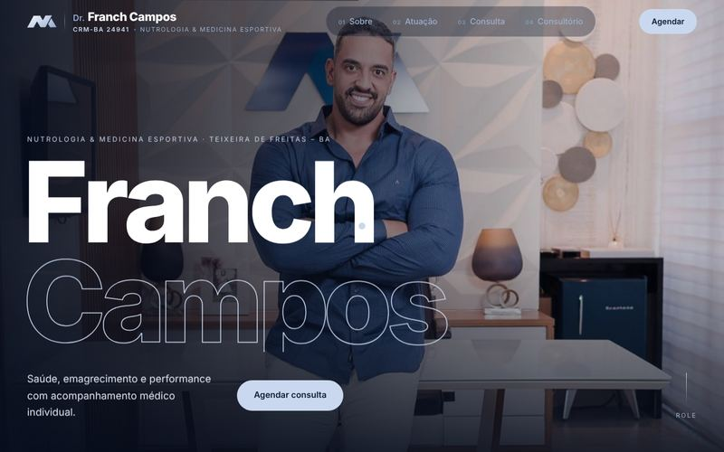
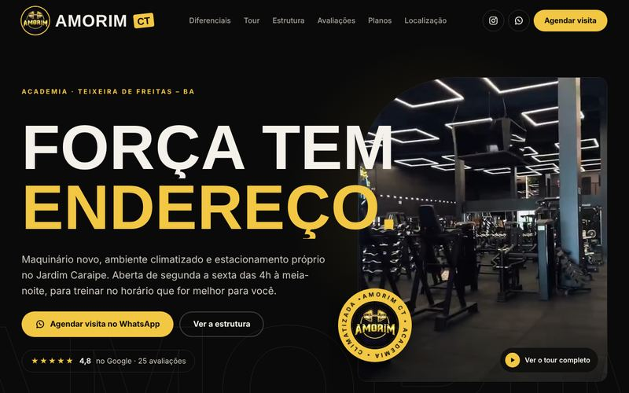
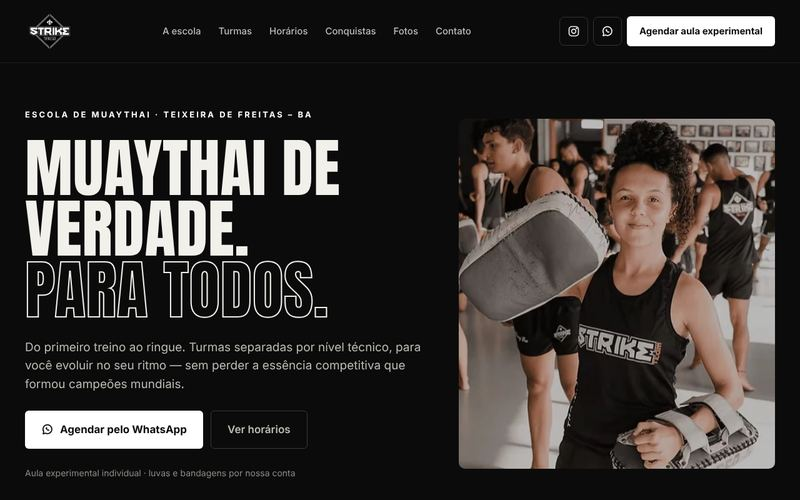
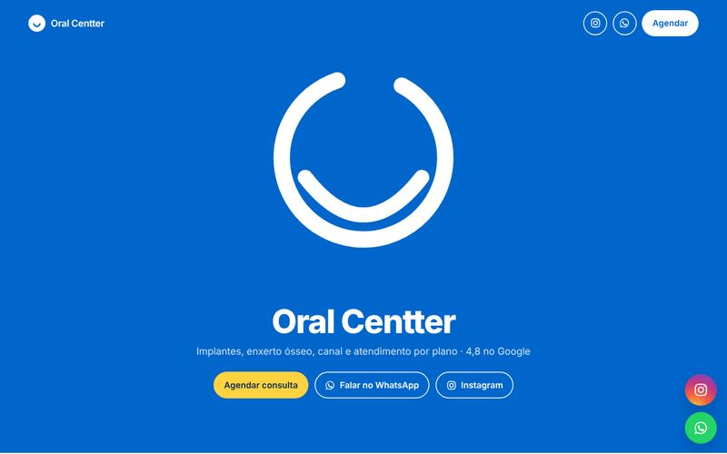
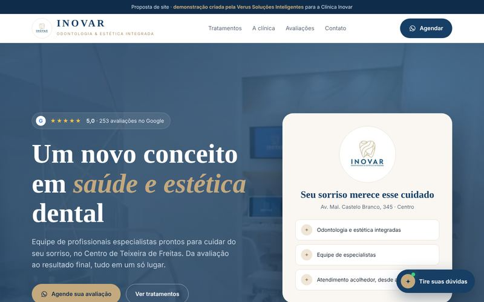
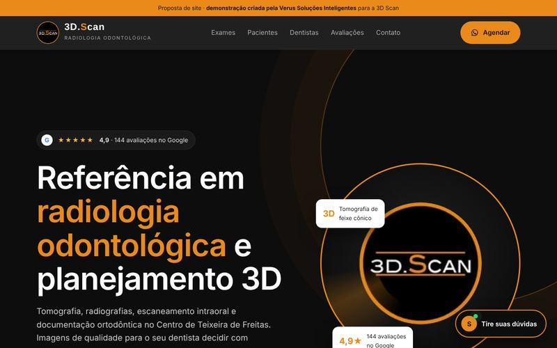

Estou construindo minha carreira com curiosidade, disciplina e atenção aos detalhes. Gosto de entender o problema antes de escrever código e de criar soluções que sejam fáceis de usar, manter e evoluir. Pela Verus Soluções Inteligentes, levo isso para negócios reais de Teixeira de Freitas, criando propostas de site para clínicas, academias e escolas.
ENGENHARIA DE SOFTWARE · DESENVOLVIMENTO WEB
artur@portfolio:~$ whoami
Código que
vira solução.
Estudante de Engenharia de Software e desenvolvedor em formação. Crio sites para negócios locais pela Verus Soluções Inteligentes e exploro soluções com JavaScript, React e Python — do protótipo à publicação.

ASA
01 / artur.silva
software.engineer
disponível para criar
STACK // JAVA · PYTHON · REACT · SQLSTATUS // APRENDENDO SEMPRECLIENTES // 6 PROPOSTAS DE SITELOCAL // BAHIA, BR
01 / Sobre mim
Código com intenção,
aprendizado constante.
Fundamentos sólidos
Combino computação, lógica e boas práticas para construir uma base técnica consistente.
Construção completa
- Requisitos e arquitetura
- Desenvolvimento e testes
- Manutenção e evolução
Visão técnica
- Programação e SQL
- Git e controle de versão
- Design de soluções
Colaboração real
- Comunicação clara
- Trabalho em equipe
- Resolução de problemas
Próximos passos
- Desenvolvimento Full Stack
- Cloud e DevOps
- Segurança de aplicações
Ferramentas certas
- Frameworks web e mobile
- Containers e deploy
- Qualidade de código
EXTRA / ARTUR BOY
Conheça meu
modo jogo.
Um pequeno cartucho interativo para explorar meu universo, descobrir projetos e coletar ideias pelo caminho.
ARTURBOYCOLOR
ARTUR BOY● BAT 100%
ARTUR
QUEST
QUEST
PRESS START
A: selecionar B: voltar
02 / Projetos selecionados
Projetos com problemas,
decisões e código.
Uma seleção de trabalhos com diferentes desafios. Em cada projeto, deixo claro o que está implementado e o que ainda é demonstração ou próximo passo.
01 / PRODUTO WEBMVP em evolução · repositório privado
Radar Local
Uma ferramenta de prospecção local para encontrar negócios por nicho e cidade, organizar contatos e preparar uma primeira abordagem.
- Reúne busca, revisão de presença digital e exportação da lista em CSV.
- Sem credencial, funciona com dados fictícios de demonstração; a busca real usa integração opcional com Serper.
02 / VISÃO COMPUTACIONALExecutável localmente
Cubos controlados pela mão
Experimento de realidade aumentada que usa a webcam e gestos para interagir com cubos desenhados sobre a imagem.
- Rastreia os landmarks da mão com MediaPipe e usa pinça para pegar e mover objetos.
- Converte coordenadas e estimativa de profundidade em uma projeção 2.5D com OpenCV e Pygame.
03 / AUTOMAÇÃOProtótipo de interface
Orbit Reply
Painel para organizar conversas e configurar fluxos de automação para o Instagram do EconominApp.
- Apresenta métricas, atividade recente e regras para seguidores, comentários e publicações.
- Os dados são demonstrativos; a conexão com a API oficial da Meta ainda é uma etapa futura.
04 / FRONT-ENDProtótipo interativo
Alarme de Sucesso
Dashboard para uma rotina matinal com desafios, metas e acompanhamento de progresso.
- Permite interagir com tarefas e visualizar sequência de dias e progresso.
- Protótipo de interface: não agenda alarmes nem usa backend ou persistência de conta.
05 / DESENVOLVIMENTO iOSApp nativo · repositório privado
Economin iOS
Aplicativo iOS que conecta o Economin a recursos nativos do ecossistema Apple.
- Integra o site em uma WKWebView e implementa compras Premium com StoreKit 2.
- Projeto preparado para execução local pelo Xcode; a publicação depende de configuração de assinatura Apple.
06 / INTERFACE DE SEGURANÇADemonstração conceitual
Sentinel AI
Protótipo visual de um painel para explorar como informações de segurança poderiam ser organizadas.
- Apresenta visões conceituais de arquitetura, detecção, cobertura e incidentes.
- Métricas e alertas são fictícios. A página não monitora nem protege dispositivos.
Quer conhecer outros experimentos? Explore todos os meus repositórios no GitHub ↗
03 / Sites para clientes
Negócios reais,
propostas sob medida.
Sites criados pela Verus Soluções Inteligentes para negócios de Teixeira de Freitas (BA). Todos são demonstrações feitas para apresentar a proposta a cada cliente, com as informações públicas do negócio, e não são os sites oficiais.

01 / SAÚDE · NUTROLOGIADemonstração
Dr. Franch Campos
Site de médico com atuação em nutrologia e medicina esportiva, com foto animada no topo e agendamento pelo WhatsApp.
Textos revisados pelas regras de publicidade médica do CFM: CRM visível, sem promessas de resultado.

02 / ACADEMIADemonstração
Amorim CT
Site de academia com vídeo no topo, tour em vídeo por capítulos, planos, horários e localização.
Números que contam ao aparecer, galeria de fotos ampliáveis e WhatsApp flutuante.

03 / ESCOLA DE MUAYTHAIDemonstração
Strike Team
Site de escola de luta com turmas por nível, horários, conquistas, perguntas frequentes e mapa.
Segunda página com álbuns de graduação filtrados por ano e mês.

04 / CLÍNICA ODONTOLÓGICADemonstração
Oral Centter
Proposta em que a rolagem desenha um sorriso e forma o logo da clínica, ligando a marca à avaliação dos pacientes.
Depoimentos com efeito “digitando…”, animações que respeitam “reduzir movimento” e marcação noindex.

05 / ODONTOLOGIA E ESTÉTICADemonstração
Clínica Inovar
Proposta de site com vídeos da clínica, tratamentos e as avaliações do Google em destaque.
Assistente virtual de demonstração com respostas pré-definidas.

06 / RADIOLOGIA ODONTOLÓGICADemonstração
3D Scan
Proposta para clínica de radiologia com exames, área para dentistas e avaliações dos pacientes.
Assistente virtual de demonstração para tirar dúvidas sobre exames.
04 / Habilidades
Ferramentas e
evidências reais.
Em vez de notas percentuais, mostro as tecnologias que aparecem nos projetos e como aplico habilidades de trabalho em decisões concretas.
Tecnologias aplicadas em projetos
Interfaces e aplicações
HTML, CSS e JavaScript no portfólio e no Orbit Reply; React, TypeScript e Vite no Alarme de Sucesso.
Interação por gestos
Python, OpenCV, MediaPipe e Pygame no experimento de cubos controlados pela mão.
Fluxos e integração
Exportação CSV e integração de busca opcional no Radar Local; publicação estática com GitHub Pages.
Propostas para clientes
Seis propostas de site para negócios locais, com agendamento por WhatsApp, mapa e avaliações do Google.
Animação sem bibliotecas
Animações guiadas pela rolagem em JavaScript puro e SVG, como o logo que se forma no site da Oral Centter.
Para todo mundo
Foco visível, textos alternativos e respeito à opção de reduzir movimento, como nos sites da Oral Centter e da Strike Team.
Soft skills demonstradas nos projetos
Visão de produto
No Radar Local, o fluxo conecta descoberta de negócios, conferência de informações, abordagem inicial e exportação.
Experimentação técnica
No projeto de visão computacional, landmarks e gestos são traduzidos em movimento e profundidade visual dos objetos.
Transparência técnica
Na documentação do Orbit Reply, separo claramente o protótipo visual da integração real ainda não implementada.
Aprendizado aplicado
Os projetos exploram domínios diferentes e documentam tecnologias, formas de execução e próximos passos.
Responsabilidade com o cliente
No site do Dr. Franch, os textos seguem as regras de publicidade médica do CFM; cada repositório de cliente explica como atualizar horários, fotos e WhatsApp.
Demonstração não é site oficial
As propostas para clientes são identificadas como demonstração e não se apresentam como o site oficial do negócio.
05 / Contato
Vamos criar algo
que faça sentido.
Quer discutir projetos, colaborar ou trocar ideias sobre desenvolvimento de software? Estou aberto a novas conversas e oportunidades.
Localização
Teixeira de Freitas - BA
Aberto a trabalho remoto
Enviar mensagem
Preencha os campos para enviar sua mensagem. O envio é processado pelo FormSubmit.
Prefere seu email? artursilvaaraujo31@gmail.com